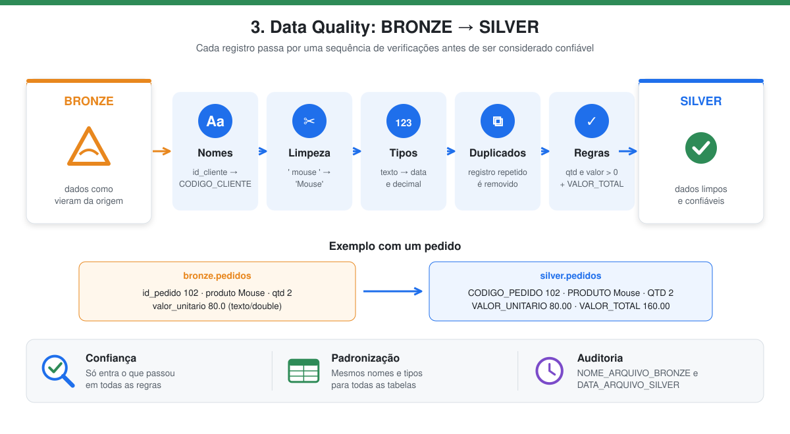
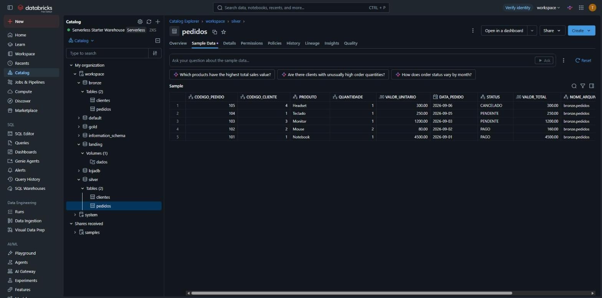

3. Data Quality → SILVER
Notebook: 004_bronze_para_silver

Em poucas palavras: é a etapa de revisão. Como um revisor de texto, o notebook corrige nomes, padroniza a escrita, confere se os números fazem sentido e remove o que estiver repetido ou errado. Só o que passa em todas as verificações vai para a silver.
| Condição | O que significa |
|---|---|
| Ler todos os dados da BRONZE | As duas tabelas da bronze são carregadas. |
| Aplicar Data Quality | Validações, limpezas e regras de negócio (veja a tabela abaixo). |
| Gravar no schema SILVER | O resultado confiável fica no schema silver. |
O que é a camada silver
A silver contém os dados confiáveis: limpos, padronizados, tipados e validados. É a camada que serve de base para a modelagem dimensional; qualquer problema de qualidade deve ser resolvido aqui, e não na gold.
Regras de Data Quality aplicadas
| Regra | O que faz | Exemplo |
|---|---|---|
| Nomenclatura | Colunas em maiúsculas e sem siglas | id_cliente → CODIGO_CLIENTE, uf → UNIDADE_FEDERATIVA |
| Limpeza de texto | Remove espaços das pontas; nomes, cidades e produtos com iniciais maiúsculas; UF e status em maiúsculas | ' mouse ' → Mouse |
| Tipagem | Corrige os tipos perdidos no CSV | VALOR_UNITARIO → decimal(10,2), DATA_PEDIDO → date |
| Duplicidade | Remove registros repetidos pela chave | dropDuplicates(["CODIGO_PEDIDO"]) |
| Regras de negócio | Descarta quantidade ou valor menores ou iguais a zero e calcula o total do pedido | VALOR_TOTAL = QUANTIDADE × VALOR_UNITARIO |
| Auditoria | Troca os metadados da bronze pelos da silver | NOME_ARQUIVO_BRONZE, DATA_ARQUIVO_SILVER |
Como funciona
As regras de nomenclatura e auditoria seguem as funções do notebook modelo do professor (_apply_name_rules e _safe_drop):
def _apply_name_rules(colname: str) -> str:
"""Regras de renome: upper + prefixos 'ID_' e sufixo '_UF'."""
n = colname.upper()
n = n.replace("ID_", "CODIGO_")
if n == "UF":
n = "UNIDADE_FEDERATIVA"
return n
Para os pedidos, as regras de limpeza, tipagem e negócio:
df_pedidos = (df_pedidos
.withColumn("PRODUTO", F.initcap(F.trim("PRODUTO")))
.withColumn("STATUS", F.upper(F.trim("STATUS")))
.withColumn("DATA_PEDIDO", F.to_date("DATA_PEDIDO"))
.withColumn("VALOR_UNITARIO", F.col("VALOR_UNITARIO").cast("decimal(10,2)"))
.filter((F.col("QUANTIDADE") > 0) & (F.col("VALOR_UNITARIO") > 0))
.dropDuplicates(["CODIGO_PEDIDO"])
.withColumn("VALOR_TOTAL", (F.col("QUANTIDADE") * F.col("VALOR_UNITARIO")).cast("decimal(12,2)")))
Resultado – silver.pedidos
| CODIGO_PEDIDO | CODIGO_CLIENTE | PRODUTO | QUANTIDADE | VALOR_UNITARIO | DATA_PEDIDO | STATUS | VALOR_TOTAL |
|---|---|---|---|---|---|---|---|
| 101 | 1 | Notebook | 1 | 4500.00 | 2026-09-01 | PAGO | 4500.00 |
| 102 | 2 | Mouse | 2 | 80.00 | 2026-09-02 | PAGO | 160.00 |
| 103 | 3 | Monitor | 1 | 1200.00 | 2026-09-03 | PENDENTE | 1200.00 |
| 104 | 1 | Teclado | 1 | 250.00 | 2026-09-05 | PENDENTE | 250.00 |
| 105 | 4 | Headset | 1 | 300.00 | 2026-09-06 | CANCELADO | 300.00 |
Resultado – silver.clientes
| CODIGO_CLIENTE | NOME | CIDADE | UNIDADE_FEDERATIVA |
|---|---|---|---|
| 1 | Ana Souza | Criciúma | SC |
| 2 | Bruno Lima | Florianópolis | SC |
| 3 | Carla Dias | Porto Alegre | RS |
| 4 | Diego Melo | Curitiba | PR |
